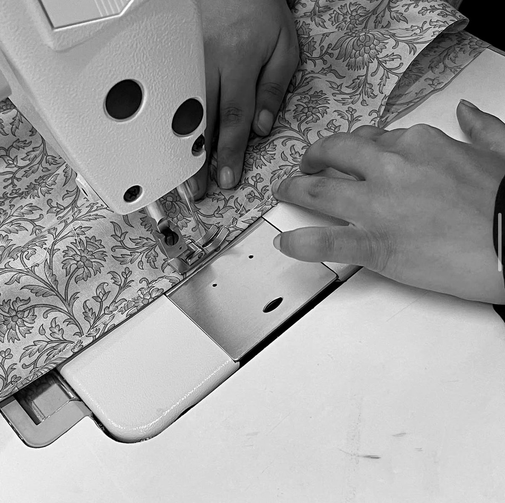

Built for
small batches
200-piece minimums, 10,000–12,000 pieces a month, and quality checked at three stages rather than one.
From tech pack
to packed carton
Sampling
Pattern development and prototyping from your tech pack or a reference sample.
Fabric sourcing
In-house sourcing across cotton, linen, viscose and blends — or work to your nominated mill.
Stitching
Woven and knitted production across womenswear, menswear, home linen and accessories.
Finishing
Pressing, trims, labelling and the detail work that decides how a garment hangs.
Quality control
Inline, mid-line and final inspection. Every piece checked before packing.
Packing & export
Custom labels, hang tags and export-ready packing. Shipped door to door.

Checked three
times over
Many units inspect only at the end, when a fault means reworking an entire run. We check inline as pieces are sewn, mid-line as they come together, and final before packing.
Catching a problem at the machine costs minutes. Catching it in the carton costs a delivery window.
- Minimum order200 pieces and above
- Monthly capacity10,000–12,000 pieces
- Machines50+ sewing machines
- TurnaroundFast turnaround
- Quality controlInline, mid-line & final — 100% checked
- FabricSourcing available in-house
- CategoriesWoven & knitted, home linen, accessories
- ExportExport capability, international shipping


{kind=link}
{kind=link}
{kind=link}
{kind=link}
Tell us what
you are making
Send your tech pack, quantities and timings. We will come back with an honest answer on whether we are the right unit for it.